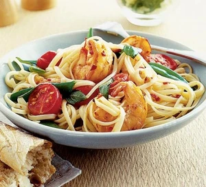

Chilli Prawn Linguine

Chilli prawn linguine is a flavorful and spicy Italian-inspired dish that combines succulent prawns (shrimp) with a
rich and tangy tomato sauce infused with a hint of chilli heat. The prawns are typically cooked with garlic, red
chilli, and sometimes sugar snap peas, adding a pop of color and crunch to the dish.
The linguine pasta is tossed with the spicy prawn mixture, creating a harmonious balance of textures and flavors.
The dish is often finished with a squeeze of lemon juice, which adds a touch of brightness and acidity to cut
through the richness of the sauce. Whether served as a quick weeknight meal or a dinner party main course, chilli
prawn linguine is a crowd-pleasing and satisfying option that’s sure to delight.
Ingredients
- 280g linguine pasta
- 200g sugar snap peas, trimmed
- 2 tbsp olive oil
- 2 large garlic cloves, finely chopped
- 1 large red chilli, deseeded and finely chopped
- 24 raw king prawns, peeled
- 12 cherry tomatoes, halved
- a handful of fresh basil leaves
- mixed salad leaves and crusty white bread, to serve
For the lime dressing
- 2 tbsp virtually fat-free fromage frais
- grated zest and juice of 2 limes
- 2 tsp golden caster sugar
Steps
- To make the dressing, mix 2 tbsp virtually fat-free fromage frais, the grated zest and juice of 2 limes and 2
tsp golden caster sugar in a small bowl and season with salt and pepper. Set aside.
- Cook 280g linguine pasta according to the packet instructions. Add 200g trimmed sugar snap peas for the last
minute or so of cooking time.
- Meanwhile, heat 2 tbsp olive oil in a wok or big frying pan, toss in 2 finely chopped large garlic cloves and 1
deseeded and finely chopped large red chilli and cook over a fairly gentle heat for about 30 seconds without
letting the garlic brown.
- Tip in 24 peeled raw king prawns and cook over a high heat, stirring frequently, for about 3 minutes until they
turn pink.
- Add 12 halved cherry tomatoes and cook, stirring occasionally, for 3 minutes until they just start to soften.
- Drain the linguine pasta and sugar snap peas well, then toss into the prawn mixture.
- Tear in a handful of basil leaves, stir, and season with salt and pepper.
- Serve with mixed salad leaves drizzled with the lime dressing, and warm crusty white bread.